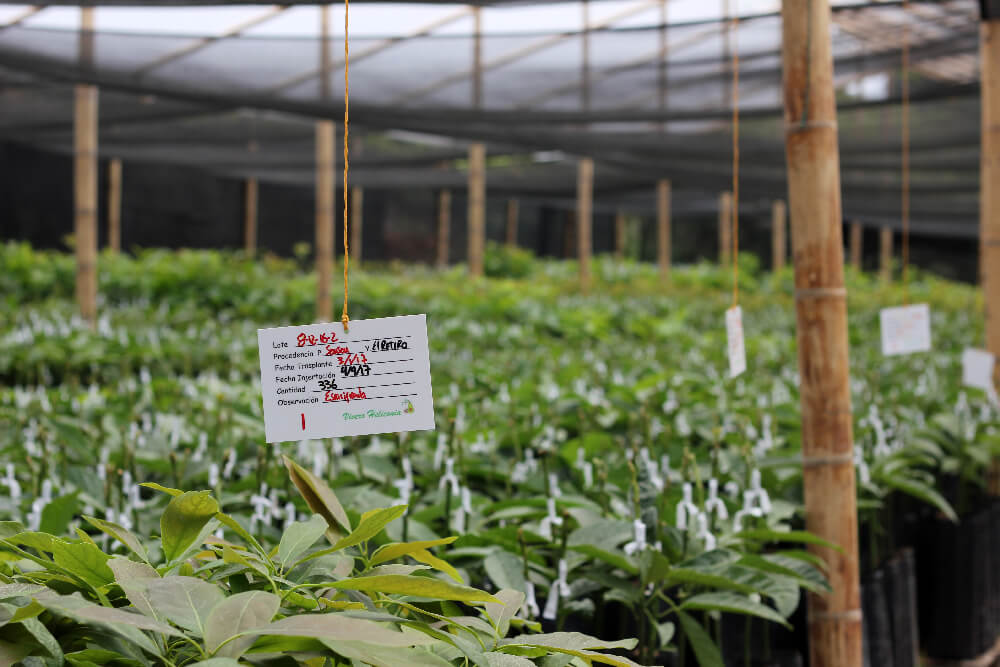

¿Qué hacer en Rionegro?
Rionegro es sin duda uno de los lugares para disfrutar un fin de semana en familia, amigos o en pareja y Tommy te recomenda los mejores planes para aprovechar al máximo tu visita a este hermoso municipio.
STEAK BLUE
Almorzar en el Restaurante Steak Blue, un lugar para carnívoros, amantes de la parrilla y fans de los buenos cortes de carnes. Simplemente recomendado. Ubicado en el Centro comercial Rio del Este. Visita su fanpage de Facebook para ver el menú.
TOMMY FROZEN YOGURT
Comer un helado en Tommy Frozen Yogurt no tienes que salir del Centro Comercial Rio del Este porque estamos ubicados en la plazoleta de comidas, puedes armar tu helado como quieras y pasar la tarde allí, el centro comercial permite la estadía de mascotas y el parqueadero es gratis.
SAN ANTONIO DE PEREIRA
Conocer la iglesia de San Antonio de Pereira ya que es un icono importante en la historia de la región, quedarás encantado con su estilo colonial y acabados en madera.
COMFAMA
Ir al parque de Comfama para tener un contacto con la naturaleza y recargarse de energía verde, es espectacular para alejarse de la urbe y entretener a los más chicos.
ATV´S-CUATRIMOTOS
Para los amantes de la aventura, los ATV´s son una excelente opción, los tours se realizan por caminos realmente hermosos, vistas panorámicas para fotografiar y lo mejor, trochas llenas de adrenalina. Los tours se realizan con instructor y de forma muy segura. Puedes contactar a Giovany Ruiz a 3016739698 o visita su pagina web.
VIVERO
No puedes irte sin visitar un vivero, hay por montones y con precios muy accequibles querrás comprar mas de una planta. Recomendamos Tierra Negra.